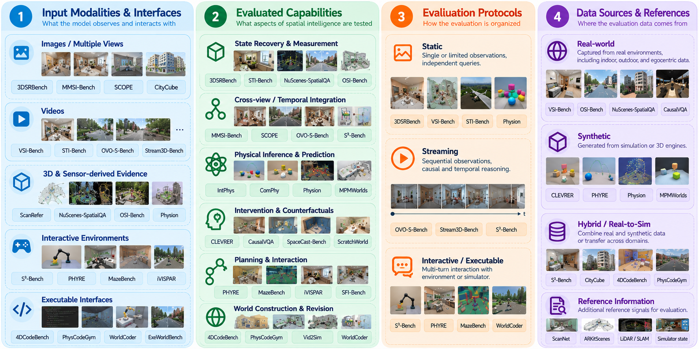

A Survey of Spatial Intelligence Benchmarks of World Model
Version v0.2
1. Introduction
Recent advances in frontier models have led to remarkable progress across language, coding, and multimodal understanding tasks. OpenAI reports that GPT-6 Astra achieves 99.9% on ARC-AGI-3 and 97.6% on FrontierMath Tier 4 (v2), rounded to 98% in its overview [1]. Google DeepMind reports that Gemini 4 Argon achieves 91.7% on LVBench and 91.9% on Vibe Code Bench [2]. These results demonstrate strong performance on specific evaluations, but do not by themselves establish the ability to perceive, represent, generate, and reason about the physical world.
Spatial intelligence is the ability to understand and reason about the three-dimensional physical world. Physical problems, such as precisely manipulating objects with robotic grippers, reconstructing geometrically consistent 3D environments from partial observations, and memorizing entire environments for navigation, require strong spatial intelligence.
To better understand the current progress and limitations of spatial intelligence, we survey representative spatial intelligence benchmarks, categorize them from different perspectives, and identify key challenges and future research directions.
Specifically, we categorize representative benchmarks from four perspectives: (1) input modalities and interfaces, including images, videos, structured 3D data, and environment interfaces; (2) evaluated capabilities, such as spatial measurement, relational reasoning, motion tracking, spatial memory, physical reasoning, prediction, and planning; (3) evaluation protocols, including static, streaming, and interactive settings; and (4) data sources, including real-world, synthetic, and hybrid environments.
Based on this taxonomy, we compare representative benchmarks, analyze their coverage and limitations, and highlight underexplored capabilities and open challenges in spatial intelligence evaluation.
Fig. 1 provides an overview of the taxonomy, summarizing its four perspectives and representative benchmarks within each category.

2. Background
2.1 Multimodal Large Language Models
Early visual foundation models, such as CLIP [3] and DINO [4], established strong visual representations through contrastive and self-supervised learning. Building on these foundations, multimodal large language models (MLLMs), such as LLaVA [5], integrated visual encoders with large language models, enabling image understanding and visual question answering.
Subsequent models extended multimodal understanding from single images to videos, enabling the understanding of temporal events, object motion, and dynamic scenes. Models such as Video-LLaVA [6] and LLaVA-OneVision [7] further enhanced video understanding across multiple frames. Beyond general-purpose visual understanding, specialized models have been developed to enhance specific spatial capabilities. For example, SpatialVLM [8] focuses on quantitative spatial reasoning, including distance and object size estimation, while DepthVLM [9] incorporates metric depth estimation into vision-language models.
Together, these developments have expanded multimodal understanding from static visual perception toward temporal and three-dimensional spatial understanding.
2.2 MLLM Benchmarks
Multimodal large language model (MLLM) benchmarks evaluate models across a wide range of visual and language understanding tasks. Existing benchmarks differ in their input modalities, task types, output formats, and evaluation methods. In terms of input modalities, evaluations range from single-image understanding to multi-image and video understanding, sometimes incorporating audio, subtitles, or other information. Common tasks include visual question answering (VQA), object recognition, optical character recognition (OCR), visual reasoning, and temporal understanding. Output formats vary from multiple-choice questions and yes-or-no answers to open-ended text, structured predictions, and numerical responses. Correspondingly, evaluation methods include accuracy-based metrics, rule-based matching, and model-based evaluation.
A number of general-purpose benchmarks have been developed to assess these capabilities. MME [57] evaluates perception and cognition across 14 subtasks using manually designed yes-or-no questions. MMBench [60] employs bilingual multiple-choice questions and CircularEval to assess multimodal understanding and answer robustness. SEED-Bench [61] covers 12 dimensions of image and video comprehension through human-annotated multiple-choice questions. MM-Vet [62] evaluates six core vision-language capabilities and 16 combinations of these capabilities through open-ended questions. For video understanding, Video-MME [65] extends evaluation to short, medium, and long videos, incorporating visual frames, subtitles, and audio. More recently, MEGA-Bench [66] covers 505 real-world tasks with diverse output formats, including numerical values, coordinates, code, LaTeX, JSON, and free-form text.
Beyond general-purpose evaluation, domain- and capability-specific benchmarks provide more focused assessments. VQA v2 [58] focuses on visual question answering and introduces complementary image pairs to reduce reliance on language priors. OCRBench [59] evaluates text-related visual understanding across 29 datasets, including text recognition, document question answering, and key information extraction. MMMU [63] assesses expert-level multimodal perception and reasoning across 30 academic subjects, while HallusionBench [64] focuses on visual hallucination and answer consistency. Together, these benchmarks illustrate how MLLM evaluation can move from broad capability coverage to targeted assessment of particular tasks, domains, or failure modes.
Spatial intelligence is one such capability of MLLMs. It involves understanding and reasoning about three-dimensional environments, spatial relationships, object motion, and physical interactions. Accordingly, spatial intelligence benchmarks evaluate these abilities more specifically. For example, 3DSRBench [10] evaluates three-dimensional spatial relations in images, while VSI-Bench [13] examines spatial understanding from indoor videos. Earlier benchmarks investigate related aspects of spatial and physical reasoning: IntPhys [33] evaluates intuitive physics through possible and impossible events; CLEVRER [26] examines descriptive, explanatory, predictive, and counterfactual reasoning in videos; Physion [27] focuses on predicting future object contact; and PHYRE [28] evaluates physical action selection in simulated environments. ComPhy [34] further investigates reasoning about unobserved physical properties, such as mass and charge, from observed interactions.
Building on these developments, this survey focuses on benchmarks for spatial intelligence, including spatial perception, geometric reasoning, temporal and physical understanding, and interaction. We also consider related evaluations involving generated videos, three-dimensional reconstruction, and executable environments where they provide complementary perspectives on spatial intelligence.
2.3 Spatial Intelligence of MLLMs
Among the capabilities of MLLMs, spatial intelligence concerns whether models can understand and use information about three-dimensional environments, object relations, motion, and physical interactions. Existing benchmarks commonly evaluate this capability through three types of tasks:
- Perception and Understanding: Extracting objects and their positions, orientations, distances, sizes, motions, and relations from images, videos, or 3D data. Examples include determining which object is on the left, estimating the width of a doorway, and recognizing the same object after the viewpoint changes.
- Reasoning and Prediction: Using observed spatial and motion information to infer relations, physical properties, causes, or future outcomes that are not directly shown. Examples include inferring which object is heavier from a collision, predicting whether two objects will later make contact, and determining how an outcome would change under a specified intervention.
- Planning and Interaction: Using spatial information to select actions, complete goals, or acquire new observations. Examples include planning a collision-free route, manipulating objects to achieve a target configuration, and moving a camera to inspect a previously occluded region.
These three categories provide a high-level view of the capabilities considered in this survey. Their evaluation may use images, videos, 3D data, or interactive environments as inputs, and may require answers, numerical estimates, actions, digital twins, or executable programs as outputs. Because input form, evaluated capability, and output form are not the same, the following sections organize existing benchmarks from four complementary perspectives: input modalities and interfaces, evaluated capabilities, evaluation protocols, and data sources.
3. Overview of the Taxonomy
This survey organizes spatial intelligence benchmarks along four complementary dimensions. Input Modalities and Interfaces describe what a model can observe and whether it can act to acquire additional information. Evaluated Capabilities describe the spatial task to be completed, including state recovery, cross-view and temporal integration, prediction, intervention, action, and world construction or revision. Evaluation Protocols describe when information is provided, when a model must respond, and what feedback is available. Data Sources describe whether images, videos, 3D scenes, and reference answers come from real-world collection, simulation, or a combination of the two. A benchmark can occupy a different position along each dimension; these dimensions are therefore complementary descriptions rather than mutually exclusive categories or a single progression from lower to higher ability.
4. Input Modalities and Interfaces
We first categorize spatial intelligence benchmarks according to the information and interfaces provided to models. Input modality constrains the available evidence, but does not by itself determine the evaluated capability. A video may be a complete observation, an arriving stream, a hidden-future prefix, a generation condition, or a reconstruction reference.
4.1 Images and Multiple Views
Static images provide only a projected observation of a scene, whereas multiple views introduce the additional problem of determining which entities and spatial relations remain invariant across viewpoints. These settings should therefore be distinguished even when both are implemented as image-based question answering.
Single-image diagnostics include 3DSRBench [10], which covers height, orientation, location, and multi-object relations, and Spatial457 [32], which separates increasingly difficult two-dimensional, three-dimensional, pose, and six-dimensional relations. NuScenes-SpatialQA [11] uses associated three-dimensional driving annotations to construct questions about objects visible in camera images. The annotations establish reference answers; they are not automatically model inputs. SpaceCast-Bench [12] instead supplies a scene observation and a specified transformation, then asks about the resulting relation.
Multiple-image tasks require evidence to be aligned across observations. MMSI-Bench [35] combines two to ten real images, SCOPE [37] changes viewpoints and reference frames, and CityCube [38] connects pedestrian, vehicle, drone, and satellite views. These tasks test whether models preserve entity identity and spatial relations when the observation changes. Multiple views provide discrete changes in viewpoint; video additionally requires evidence to be organized along a temporal sequence.
4.2 Videos
Video is not a single evaluation condition. It can serve as a fixed sequence for measurement, an incrementally arriving stream, a prefix from which an unseen future must be inferred, a condition for continued generation, or a reference that must be reconstructed.
As a complete prescribed observation, video supports spatial measurement and integration. VSI-Bench [13] uses indoor scan videos for questions about count, size, distance, direction, route, and temporal order. STI-Bench [14] asks quantitative questions about size, distance, pose, displacement, speed, and acceleration. MMSI-Video-Bench [15] broadens video-based spatial tasks, while OSI-Bench [41] examines metric and motion questions in outdoor pedestrian-view videos. “Complete” refers to the benchmark-provided clip or sampled frames, not every frame of the original recording.
As a stream, video arrives over time. OVO-S-Bench [24] separates a streaming setting from its prefix-access setting, Stream3D-Bench [25] evaluates incremental spatial understanding and response timing, and S³-Bench [16] combines streaming spatial questions with an active simulated component. These settings differ in when the query is known, whether history can be revisited, and how much state may be retained.
As a generation or memory condition, video can be continued to test whether previously observed entities and environments remain consistent. MBench [42] is mentioned here only to mark this alternative use of video; this survey does not review video-generation architectures or general generation-quality metrics in detail. As a reconstruction reference, video specifies an observed dynamic scene that must be externalized as an executable world, as in 4DCodeBench [17] and PhysCodeGym [18]. As a hidden-future prefix, it supplies evidence up to a cutoff while withholding the target outcome, as in Physion [27] and MPMWorlds [49]. The same modality can therefore support measurement, memory, prediction, or reconstruction; these tasks cannot be distinguished from modality alone.
4.3 3D and Multisensor Data
Explicit geometry and sensor measurements may be supplied to the model, used only to construct reference answers, or reserved for the evaluator. These three roles must be separated. ScanRefer [19], for example, supplies a 3D point cloud together with a referring expression for object localization. Such a task differs from an RGB-only question whose answer was constructed from a scan.
NuScenes-SpatialQA [11] uses associated 3D driving annotations to build reference answers without thereby making LiDAR a default model input. OSI-Bench [41] similarly uses stereo, LiDAR, IMU/GPS, and SLAM to establish metric quantities, while the evaluated visual systems need not receive all of those sensors. Physion [27] reports visual models and separate baselines with privileged physical state. Geometry supplied to a model, geometry inferred by a system, and geometry used only for scoring are therefore different information conditions.
4.4 Interactive and Executable Interfaces
Some evaluations expose more than observations. They provide an interface through which a model can acquire evidence, alter the environment, execute a generated artifact, or inspect the consequences of its own construction.
First, a model may change its observation position. The simulated component of S³-Bench [16] allows movement, rotation, and scanning to acquire evidence that was not initially visible. Second, a model may change the environment and observe the result. PHYRE [28] returns outcomes after an agent places objects, while MazeBench [20], [21] and iVISPAR [36] expose closed-loop navigation or puzzle environments. WorldCoder [22] uses symbolic states, actions, and rewards to collect transitions for program synthesis and planning. These settings differ in whether actions merely reveal a new view or alter the underlying world.
Third, a model may execute and debug a generated world. 4DCodeBench [17] and PhysCodeGym [18] allow code–execution–inspection loops around video-based reconstruction. PhysCodeBench [50] supplies simulation specifications and engine documentation, while ExeWorldBench [51] ranges from visually specified mechanisms to higher-level construction intentions. Execution reveals errors, renders, and properties of the model’s own artifact, but does not necessarily provide a new observation of the reference world. These interfaces define what a model is allowed to do; the next section asks what capability the resulting task actually evaluates.
5. Evaluated Capabilities
This section retains the three broad capability categories introduced in Section 2.3 and further divides them according to the tasks that benchmarks require models to perform. Perception and Understanding includes recovering the current spatial state and integrating information across views and time. Reasoning and Prediction includes inferring unobserved properties and future outcomes and analyzing interventions or counterfactual changes. Planning and Interaction includes using spatial information to achieve goals and actively acquire evidence. Section 5.4 separately discusses world construction and revision because an explicit world can preserve observed state while also supporting prediction, intervention, and planning. A benchmark may involve several capabilities, so classification should be applied to individual tasks rather than inferred only from a paper or dataset name.
5.1 Perception and Understanding
This category evaluates whether models can extract and maintain spatial information about the observed environment. It includes both recovering properties from the available evidence and preserving entity–location relationships when viewpoint or time changes.
5.1.1 State Recovery and Measurement
The first requirement is to recover properties of the observed state: what entities are present, where they are located, how they are oriented, and how their positions or motions can be measured. Perception and grounding tasks include recognition, counting, and localization; ScanRefer [19], for example, localizes a referred object in a 3D scan. Measurement tasks include depth, distance, dimensions, orientation, relative position, camera motion, displacement, speed, and acceleration. Representative examples include 3DSRBench [10], Spatial457 [32], VSI-Bench [13], STI-Bench [14], NuScenes-SpatialQA [11], OSI-Bench [41], and VLM4D [23].
The form of the answer limits the claim. A qualitative relation such as “left of,” a five-way distance interval, and a continuous metric estimate are different targets. VSI-Bench [13] accordingly uses mean relative accuracy for numerical questions and accuracy for choice questions. STI-Bench v6 [14] reports Gemini-2.5-Pro at 41.4% on its five-way questions; this demonstrates option selection under that protocol, not calibrated continuous measurement. Similarly, an evaluator may use scans, LiDAR, or poses to establish the answer even when the tested model receives only RGB observations.
5.1.2 Cross-view and Temporal Integration
Recovering a state from one observation is insufficient when the same world is seen from another viewpoint or revisited later. Cross-view and temporal integration evaluate whether entities, locations, and relations remain consistently bound across changing observations. MMSI-Bench [35] combines multiple real images; SCOPE [37] changes viewpoints and reference frames; and CityCube [38] connects observations across urban scales. MMSI-Bench reports GPT-5 at 41.9% and humans above 97% under its multi-image choice-question protocol. SCOPE instead asks whether answers remain consistent under controlled viewpoint changes, so the two results should not be treated as the same quantity.
Temporal integration adds memory and access conditions. VSI-Bench [13] includes questions that require evidence across a recorded route. OVO-S-Bench [24] decomposes streaming spatial intelligence into levels including global allocentric mapping, which is the lowest-scoring level for 32 of 38 evaluated systems in v2. Stream3D-Bench [25] and S³-Bench [16] evaluate incrementally arriving observations under different response and action rules. OSI-Bench [41] extends metric and motion questions to outdoor scenes; its 37.2% Gemini-2.5-Pro full-set result cannot be directly compared with the separately collected 60.3% human result on a 270-question Tiny subset.
The same persistence requirement also appears in generated worlds, although the evaluated output is different. MBench [42] uses generated continuations to test entity, environment, and causal memory, while LOCI [43] includes long-stream revisit evaluation under bounded memory. WorldMem [44], GEN3C [45], and Infinite-World [46] illustrate alternative memory mechanisms. They are mentioned only to show how persistence can be externalized and tested; this survey does not review their generation architectures, training recipes, or general video-quality metrics in detail. Regenerating a consistent view and answering a question about earlier geometry remain related but different targets.
A persistent representation describes observed history. Reasoning and prediction ask whether it also supports conclusions about properties or states that were not directly observed.
5.2 Reasoning and Prediction
This category evaluates whether models can combine relations, infer properties that are not directly visible, predict unseen outcomes, and reason about specified changes. Perceptual estimation can itself require inference; the distinction here concerns what the task asks the model to conclude. NuScenes-SpatialQA [11], for example, separates direct spatial understanding from multi-hop relational reasoning, even though both use the same image source.
5.2.1 Unobserved Physical Properties and Future Outcomes
Some spatial and physical properties cannot be read directly from a frame. They must be inferred from how objects move and interact, or tested by predicting what happens after the observed sequence ends. IntPhys [33] begins from a related diagnostic by contrasting physically possible and impossible events.
ComPhy [34] makes the first case concrete. A video shows objects moving, colliding, attracting, or repelling, and the task asks which object is heavier or whether their unseen charges produce attraction or repulsion. Mass and charge are not written in the image; the answer must be inferred from their effects on motion. This differs from future-event prediction. Physion [27] shows a video prefix and asks whether two specified objects will later contact, while CLEVRER [26] includes questions about future collision events. Physion reports that the evaluated visual models remain substantially below humans; its privileged-state baselines must be separated from RGB-only models.
MPMWorlds [49] moves from a discrete future event toward continuous future dynamics by fitting an observed simulation prefix and evaluating a hidden suffix. In its v2 minimal-information setting, the reported program-generation system obtains 0.316 mIoU and the video-prediction system 0.578, but they use different models and candidate budgets. The numbers therefore compare complete systems under their reported settings, not the intrinsic superiority of code or video. CausalVQA [40] contributes causal and hypothetical questions from real video, where the reference answers come from human-authored paired variants rather than simulator state.
These tasks form a readable progression: infer a currently unobserved property from its visible effects, predict whether an unseen event will occur, or extrapolate how a state will continue to change. All differ from waiting until a future event becomes visible and then responding, as permitted by some Stream3D-Bench tasks [25].
5.2.2 Intervention and Counterfactual Reasoning
Prediction asks what follows from the observed state. Intervention asks a stronger question: what would change if one condition were deliberately modified while the remaining state were held fixed? CLEVRER [26] asks event-level counterfactual questions, and CausalVQA [40] includes real-video hypothetical variants. SpaceCast-Bench [12] specifies object movements or scene transformations and asks for resulting spatial relations; these geometric changes should be distinguished from changing a physical mechanism.
Executable state permits stronger control over what changes. ScratchWorld [52] derives state transitions and counterfactual consequences from virtual-machine execution traces and reports counterfactual exact-match scores of 16–26% across evaluated systems in v1. PhysCodeGym [18] reruns selected reconstructed scenes after changes to forces, contact, or initial conditions and inspects native scene state. What-If World [56] evaluates intervention-conditioned generated videos; it is included only as a nearby output setting, because this survey does not analyze general video-generation evaluation in detail. Prompt-conditioned video changes and executable interventions differ in how precisely other variables can be held fixed.
Counterfactual answers provide evidence about causal reasoning, but controlled executable reruns make the changed variables and resulting state more directly inspectable.
5.3 Planning and Interaction
This category evaluates whether models can use spatial information and inferred consequences to choose actions, achieve goals, or acquire missing evidence.
5.3.1 Function and Goal-directed Action
Spatial intelligence becomes operational when recovered relations are used to select actions, diagnose affordances, or achieve a goal under environmental constraints. MazeBench [20], [21] requires navigation and box pushing to open routes. PHYRE [28] asks an agent to place one or two balls so that the resulting simulation satisfies a target contact condition, and scores success across a limited attempt budget. iVISPAR [36] evaluates closed-loop puzzle completion and path efficiency. SFI-Bench [39] connects spatial layout to functional matching, operation planning, and troubleshooting; proposed plans, tool-assisted answers, and executed actions must be reported separately.
5.3.2 Active Evidence Acquisition
In active evaluation, the model is not limited to evidence selected in advance by the benchmark designer. It must decide which observation or interaction would reduce uncertainty. The simulated component of S³-Bench [16] permits movement, rotation, and scanning to gather evidence for spatial questions, whereas its real-video component follows fixed trajectories. MazeBench [20] also couples observation to action. WorldCoder [22] illustrates a symbolic setting in which actions collect environment transitions that are used to construct an executable model and support planning. PHYRE [28] supplies outcome feedback across action trials, but successful search under a budget does not by itself show that the agent recovered an explicit physical model.
Active exploration updates what an agent knows about an environment. Some evaluations go further by requiring that knowledge to be externalized as a generated continuation, parameterized digital twin, or executable program.
5.4 World Construction and Revision
Some benchmarks require models not only to answer questions or select actions, but also to externalize their understanding as a world representation that can be inspected and reused. The output may be a continued video, a digital twin with geometric and physical parameters, or an executable program or simulation. We group these tasks under world construction and revision. Because the same representation may reproduce observed content, predict a future, execute an intervention, or support planning, each benchmark must be described in terms of which of these uses it actually evaluates.
Generated-video systems externalize state through future or revisited frames. MBench [42], WorldMem [44], and LOCI [43] are mentioned only to illustrate persistence tests; their architectures and general video-generation metrics are outside the detailed scope of this survey. Parameterized digital twins expose geometry and physical parameters more directly. Vid2Sim [47] and PhysTwin [48] recover such representations from video and evaluate behavior under held-out futures or new interactions within their respective material and capture assumptions.
Executable worlds expose programs or native simulator state. WorldCoder [22] learns Python transition and reward functions for downstream planning. 4DCodeBench [17] reconstructs observed dynamic scenes as executable graphics programs; its reported Astra [Max] reconstruction VQA score of 87.6% concerns observed scene content, not hidden-future prediction. PhysCodeBench [50] and ExeWorldBench [51] construct simulations or mechanisms from specifications at different levels of abstraction, while PhysCodeGym [18] adds native-state inspection and selected interventions to video-based reconstruction.
Revision requires more than producing an initial artifact. WorldCoder updates an executable model after observing new transitions, PACE-Bench [53] evaluates code adaptation when physical conditions change, ScratchWorld [52] checks whether state changes produce the correct executable consequences, and PhysCodeGym [18] reruns reconstructed scenes under altered conditions. Syntax repair, reconstruction of already observed motion, extrapolation of an unseen future, controlled intervention, and revision after new evidence must therefore remain separate evaluation targets.
6. Evaluation Protocols
Spatial intelligence benchmarks also differ in how models receive observations, when they are required to respond, and what outputs they must produce.
6.1 Observation and Interaction Settings
Evaluation protocols can be grouped by whether the available evidence is supplied in advance, arrives over time, or is acquired and changed through model actions. We therefore distinguish static, streaming, and interactive evaluation, while reporting history access, response timing, action permissions, and execution feedback within each setting.
- Static Evaluation: The benchmark supplies the evidence before the model answers. This includes a static image, multiple images, a 3D representation, an offline video, or a fixed video prefix. Examples include 3DSRBench [10], VSI-Bench [13], and STI-Bench [14]. Prefix-only tasks also belong here when the model receives a fixed history up to a cutoff and may reread it: OVO-S-Bench [24] has such a setting, while Physion [27] and MPMWorlds [49] withhold the target future under different task protocols. Reports must state whether the input is a complete benchmark clip, sampled frames, or only the prefix available before the query time.
- Streaming Evaluation: Observations arrive sequentially and the system must maintain or compress state as the stream unfolds. OVO-S-Bench [24] separately evaluates query-agnostic streaming systems, while Stream3D-Bench [25] and S³-Bench [16] use their own incremental-access conditions. Delayed or forward response is treated as a timing variant within streaming evaluation: a model may wait until a condition becomes visible, but recognizing it after observation is not the same as predicting it beforehand. The retained history, memory budget, query time, ingestion rate, and permitted answer time must be reported.
- Interactive Evaluation: Model actions obtain new evidence, alter an environment, or produce inspectable execution feedback. S³-Bench [16] permits active view acquisition in simulation. PHYRE [28], MazeBench [20], [21], iVISPAR [36], and WorldCoder [22] return feedback after environment actions. 4DCodeBench [17], PhysCodeGym [18], PhysCodeBench [50], and ExeWorldBench [51] instead let agents execute or inspect generated artifacts. Seeing a render produced by one’s own code is not the same as receiving a new observation of the reference world.
Controlled rerun and revision are not additional top-level access settings. They specify how a representation is validated or updated within an interactive or executable evaluation. A hidden-future test must keep the target suffix from both the model and candidate-selection procedure; an intervention must state what changed and what was reset; and revision must identify the new evidence supplied.
6.2 Output Representations
Output representations determine which properties of an inferred world can be inspected. A short answer exposes only the requested conclusion, whereas a trajectory, digital twin, or executable program can expose additional state for later validation.
- Question Answering: Multiple-choice answers, short text, or free-form explanations, as in NuScenes-SpatialQA [11], S³-Bench [16], and SpaceCast-Bench [12].
- Numerical and Structured Prediction: Distances, dimensions, angles, coordinates, camera poses, object trajectories, scene graphs, or 3D geometry.
- Action Generation: Navigation, exploration, or manipulation actions, as in S³-Bench [16], PHYRE [28], and MazeBench [20].
- Parameterized Digital Twins: Geometry and physical parameters that support further simulation, as in Vid2Sim [47] and PhysTwin [48].
- Executable Programs or Scenes: Graphics or simulation programs with inspectable state, as in 4DCodeBench [17], PhysCodeGym [18], and ExeWorldBench [51]. WorldCoder [22] instead generates transition and reward functions that a separate planner uses.
- Generated Video: Future or revisited observations, as in MBench [42] and What-If World [56]. This output is included only to delimit the representation space; general video-generation evaluation is not reviewed in detail.
A numerical property may still be evaluated through a discrete choice, as in STI-Bench [14]. Similarly, an executable output only provides stronger physical evidence when the evaluation actually inspects state, tests held-out behavior, or reruns a controlled change.
6.3 Evaluation Targets and Metrics
The output format alone does not determine what a score demonstrates. Evaluation targets and metrics must be matched to the operation being tested: answering a spatial question, estimating a quantity, responding during a stream, reconstructing an observed scene, predicting held-out behavior, or validating an executable state.
For answers and numerical estimates, NuScenes-SpatialQA [11] separates qualitative relations from quantitative measurements, VSI-Bench [13] separates MRA from choice accuracy, and CLEVRER [26] reports both per-option and stricter per-question accuracy. SpaceCast-Bench [12] separates transformation levels and task types. These metrics should not be treated as equivalent measures of continuous spatial precision.
For streaming and action, answer quality, response timing, and action efficiency are distinct. Stream3D-Bench [25] scores both answer content and timing. PHYRE [28] reports success under an attempt budget, iVISPAR [36] includes path efficiency, and WorldCoder [22] uses downstream task performance and interaction efficiency. S³-Bench [16] must also be interpreted according to whether evidence came from a fixed real trajectory or active simulated exploration.
For video-to-scene or program reconstruction, 4DCodeBench [17] separates rendered appearance, geometry, trajectories, and events, with different reference information available for real and synthetic scenes. PhysCodeGym [18] adds native-scene inspection, physical assertions, and selected interventions; its v1 Astra overall score of 0.663 combines several components and should not replace their individual interpretation. A reconstruction can match the observed video while encoding the wrong mechanism or a hard-coded trajectory.
For digital twins, Vid2Sim [47] and PhysTwin [48] obtain stronger evidence from held-out futures or new interactions than from matching the fitting observations alone. For executable state and interventions, ScratchWorld [52] uses change-sensitive evaluation: a copying baseline can retain 98.0% overall field overlap while obtaining zero changed-field F1. PhysCodeBench v2 [50] uses avg@5 and physical assertions, which differs from both a single attempt and the earlier paper version.
Benchmarks centered on general video-generation quality are mentioned only as neighboring work and are not compared here. MBench [42] and What-If World [56] appear only where generated output clarifies memory or intervention; their general generation metrics are outside scope. Physics-IQ Verified [55] is retained briefly because it shows that corrections to prompts, references, and aggregation can change a physical-video benchmark’s conclusions, not to survey video-generation evaluation itself.
7. Data Sources
Spatial intelligence benchmarks can also be grouped by whether their evaluation data are real, synthetic, or combine real observations with simulation. The data source affects both the visual complexity and controllability of a benchmark and how its reference answers are obtained. Real-world benchmarks may rely on sensor measurements, reconstructions, or human annotations, whereas synthetic benchmarks can use simulator states and execution outcomes directly.
7.1 Real-world Data
These benchmarks are constructed from real-world observations, including indoor RGB-D scans, egocentric videos, and autonomous-driving data. Such data capture natural visual complexity, environmental variation, and sensor noise. Representative sources include ScanNet [29], ARKitScenes [30], and Ego4D [31]. NuScenes-SpatialQA [11] builds questions from real driving images and associated 3D annotations.
Real-world reference answers commonly come from depth sensors, LiDAR, calibrated camera poses, IMU/GPS, reconstructed geometry, or human annotation. VSI-Bench [13] derives questions from indoor scans, while OSI-Bench [41] uses stereo, LiDAR, IMU/GPS, and SLAM to establish outdoor quantities. These sensors can support the reference answer without being supplied to the tested model. CausalVQA [40] instead uses real videos and human-authored causal or hypothetical questions. Sensor calibration, reconstruction error, and annotation quality therefore remain part of the evidence; ReSTI [54] shows why real observations do not make every derived question automatically reliable.
7.2 Synthetic Data
These benchmarks are constructed using simulation engines or procedural scene generation. CLEVRER [26] and PHYRE [28], for example, can use simulator state to establish object properties, contacts, trajectories, actions, and outcomes. Physion [27] also provides simulated physical scenarios, while reporting privileged-state baselines separately from visual models.
Simulation can provide a hidden future or a controlled intervention without estimating the reference from noisy sensors. MPMWorlds [49] withholds a simulator-generated suffix, while ScratchWorld [52] derives exact program-world consequences from executable traces. These sources support resets and controlled changes, but their truth remains bounded by the engine, task templates, and mechanisms represented in the simulator.
7.3 Hybrid and Real-to-Sim Data
These benchmarks combine real and synthetic environments or infer a simulated representation from real observations. S³-Bench [16] includes both simulated active exploration and fixed real-world streaming videos. CityCube [38] combines real and simulated urban evidence across views. 4DCodeBench [17] contains real reference videos and synthetic dynamic scenes; simulator state is available for some checks in the synthetic subset but not identically for the real subset.
Real-to-sim reconstruction has a different relationship between observation and reference. Vid2Sim [47] and PhysTwin [48] infer simulated counterparts from captured videos, while PhysCodeGym [18] evaluates reconstructed executable scenes. The reconstructed state is an estimate, not independent ground truth. Held-out views, future observations, new interactions, and native-state checks can provide additional evidence. Reliable interpretation therefore requires stating whether a target comes from calibrated real-world measurement, simulator state, or an observation withheld from fitting.
8. Discussion
8.1 General Progress Does Not Guarantee Spatial Competence
Strong visual QA does not guarantee spatial understanding or reliable spatial action. Spatial457 provides a direct within-model example: GPT-4o answers basic multi-object and 2D-relation questions correctly on an image, yet fails 3D-pose and 6D-relation questions about that same image [32]. Across the benchmark, its accuracy decreases from 74.46% on single-object questions to 42.41% on 3D pose and 37.01% on 6D spatial relations [32]. Agent outputs show a related limitation: PhysCodeGym reports reconstructions with perfect object and event scores that still violate physical constraints [18]. Evaluation should therefore extend beyond answers and estimates to task completion and verifiable spatial outcomes.
8.2 From Answering Questions to Acting
Spatial evaluation is moving toward practical tasks that require sustained interaction or real-time responses. Streaming benchmarks examine whether models retain spatial information and respond as observations unfold [16], [25]. Agent benchmarks extend evaluation to constructing and refining executable environments, connecting spatial understanding to useful outputs [17], [18]. Together, these directions shift attention from isolated questions toward sustained performance in applications such as navigation, assistance, and scene reconstruction.
8.3 Synthetic Advantages May Not Transfer to Real Data
Higher synthetic performance does not guarantee a real-world advantage. In S³-Bench, Qwen3-VL-8B outperforms InternVL3.5-8B on the simulated split (41.1 versus 37.7), but their ranking reverses on the real split (39.0 versus 40.5) [16]. In 4DCodeBench, Claude Opus 5.5 [High] scores 0.88 on synthetic scenes versus 0.78 on real scenes for reconstruction VQA, and 0.92 versus 0.84 for perceptual similarity, all on a 0–1 scale [17]. When training with synthetic data, real-world validation is needed to guide data selection and verify that improvements on synthetic tasks translate into real-world gains.
9. Conclusion
Spatial intelligence is a specific capability through which MLLMs understand and act in the physical world. Existing benchmarks evaluate it through spatial measurement, cross-view and temporal integration, prediction of unobserved states, intervention, action, and world construction. This survey organizes these benchmarks by input modalities and interfaces, evaluated capabilities, evaluation protocols, and data sources, distinguishing what a model observes, what task it must complete, what feedback it can obtain, and where reference answers come from. Future evaluations should connect question answering, prediction, interaction, and executable-world tasks under more consistent observation conditions and resource budgets, while continuing to distinguish observed content from hidden futures, reconstruction from prediction, and executable behavior from physical validity.
References
[1] OpenAI. (2026). GPT-6 Astra: A New Generation of Intelligence. Official announcement.
[2] Google DeepMind. (2026). Gemini 4 Argon Model Card. Official model card.
[3] Radford, A., et al. (2021). Learning Transferable Visual Models From Natural Language Supervision (CLIP). ICML 2021. arXiv:2103.00020.
[4] Caron, M., et al. (2021). Emerging Properties in Self-Supervised Vision Transformers (DINO). ICCV 2021. arXiv:2104.14294.
[5] Liu, H., Li, C., Wu, Q., & Lee, Y. J. (2023). Visual Instruction Tuning (LLaVA). arXiv:2304.08485.
[6] Lin, B., Ye, Y., Zhu, B., Cui, J., Ning, M., Jin, P., & Yuan, L. (2024). Video-LLaVA: Learning United Visual Representation by Alignment Before Projection. EMNLP 2024, pp. 5971–5984. ACL Anthology.
[7] Li, B., et al. (2025). LLaVA-OneVision: Easy Visual Task Transfer. TMLR 2025. arXiv:2408.03326.
[8] Chen, B., et al. (2024). SpatialVLM: Endowing Vision-Language Models with Spatial Reasoning Capabilities. CVPR 2024. arXiv:2401.12168.
[9] Yu, H., Qu, X., Wang, Y., Zhu, J., & Ke, L. (2026). Unlocking Dense Metric Depth Estimation in VLMs (DepthVLM). arXiv:2605.15876.
[10] Ma, W., Chen, H., Zhang, G., Chou, Y.-C., Chen, J., de Melo, C., & Yuille, A. (2025). 3DSRBench: A Comprehensive 3D Spatial Reasoning Benchmark. ICCV 2025. arXiv:2412.07825v4.
[11] Tian, K., Mao, J., Zhang, Y., Jiang, J., Zhou, Y., & Tu, Z. (2025). NuScenes-SpatialQA: A Spatial Understanding and Reasoning Benchmark for Vision-Language Models in Autonomous Driving. arXiv:2504.03164v2.
[12] Li, H., Su, J., Li, D., Zhang, W., Lu, W., Xiao, J., Zhuang, Y., & Shen, Y. (2026). SpaceCast-Bench: Evaluating Predictive Spatial Reasoning in Vision-Language Models. arXiv:2610.12402v1.
[13] Yang, J., Yang, S., Gupta, A. W., Han, R., Fei-Fei, L., & Xie, S. (2025). Thinking in Space: How Multimodal Large Language Models See, Remember, and Recall Spaces (VSI-Bench). arXiv:2412.14171v2.
[14] Li, Y., Zhang, Y., Lin, T., Liu, X., Cai, W., Liu, Z., & Zhao, B. (2025). STI-Bench: Are MLLMs Ready for Precise Spatial-Temporal World Understanding? arXiv:2503.23765v6.
[15] Lin, J., et al. (2025). MMSI-Video-Bench: A Holistic Benchmark for Video-Based Spatial Intelligence. arXiv:2512.10863v1.
[16] Wei, Y., Huang, W., Chen, Q., Hou, L., & Qi, X. (2026). See, Remember, Explore: A Benchmark and Baselines for Streaming Spatial Reasoning (S³-Bench). arXiv:2603.23864v1.
[17] Shen, R., Kovačič, Ž., Kulits, P., Wang, X., Li, Z., Tenenbaum, J. B., Yuille, A., Chen, J., & Wu, J. (2026). 4DCodeBench: Benchmarking Agents on Inverse Graphics of Dynamic Scenes. arXiv:2610.03715v1.
[18] Shao, S., et al. (2026). PhysCodeGym: Benchmarking Coding Agents for Physically Verifiable 4D Reconstruction. arXiv:2610.17288v1.
[19] Chen, D. Z., Chang, A. X., & Nießner, M. (2020). ScanRefer: 3D Object Localization in RGB-D Scans Using Natural Language. ECCV 2020. arXiv:1912.08830.
[20] Pappas, J., & Pappas, D. (2026). Maze Bench: Visual Spatial Reasoning in a 3D Open World. Project description. MazeBench.
[21] MazeBench. (2026). MazeBench Results: Evaluation Tracks and Scoring. Official evaluation documentation.
[22] Tang, H., Key, D., & Ellis, K. (2024). WorldCoder, a Model-Based LLM Agent: Building World Models by Writing Code and Interacting with the Environment. arXiv:2402.12275v3.
[23] Zhou, S., et al. (2025). VLM4D: Towards Spatiotemporal Awareness in Vision Language Models. arXiv:2508.02095v2.
[24] Li, Y., Liu, P., Zang, Y., Shi, Z., Fu, Q., Hao, H., & Lu, J. (2026). OVO-S-Bench: A Hierarchical Benchmark for Streaming Spatial Intelligence in Multimodal LLMs. EMNLP 2026. arXiv:2606.03890v2.
[25] Yu, H., Qu, X., Ke, L., Zhang, B., Wang, Y., Zhu, J., & Yu, D. (2026). Stream3D-VLM: Online 3D Spatial Understanding with Incremental Geometry Priors. arXiv:2606.06891v1.
[26] Yi, K., Gan, C., Li, Y., Kohli, P., Wu, J., Torralba, A., & Tenenbaum, J. B. (2020). CLEVRER: Collision Events for Video Representation and Reasoning. ICLR 2020. arXiv:1910.01442v2.
[27] Bear, D. M., et al. (2022). Physion: Evaluating Physical Prediction from Vision in Humans and Machines. arXiv:2106.08261v3.
[28] Bakhtin, A., van der Maaten, L., Johnson, J., Gustafson, L., & Girshick, R. (2019). PHYRE: A New Benchmark for Physical Reasoning. arXiv:1908.05656v1.
[29] Dai, A., Chang, A. X., Savva, M., Halber, M., Funkhouser, T., & Nießner, M. (2017). ScanNet: Richly-Annotated 3D Reconstructions of Indoor Scenes. CVPR 2017. arXiv:1702.04405.
[30] Baruch, G., et al. (2021). ARKitScenes: A Diverse Real-World Dataset for 3D Indoor Scene Understanding Using Mobile RGB-D Data. arXiv:2111.08897.
[31] Grauman, K., et al. (2022). Ego4D: Around the World in 3,000 Hours of Egocentric Video. CVPR 2022. arXiv:2110.07058.
[32] Wang, X., Ma, W., Zhang, T., de Melo, C. M., Chen, J., & Yuille, A. (2025). Spatial457: A Diagnostic Benchmark for 6D Spatial Reasoning of Large Multimodal Models. CVPR 2025. arXiv:2502.08636v4.
[33] Riochet, R., et al. (2020). IntPhys 2019: A Benchmark for Visual Intuitive Physics Understanding. arXiv:1803.07616v3.
[34] Chen, Z., et al. (2022). ComPhy: Compositional Physical Reasoning of Objects and Events from Videos. ICLR 2022. arXiv:2205.01089v1.
[35] Yang, S., et al. (2026). MMSI-Bench: A Benchmark for Multi-Image Spatial Intelligence. ICLR 2026. arXiv:2505.23764v3.
[36] Mayer, J., et al. (2025). iVISPAR—An Interactive Visual-Spatial Reasoning Benchmark for VLMs. EMNLP 2025. arXiv:2502.03214v2.
[37] Kim, Y., Kim, J., Jeong, Y., & Cho, S.-B. (2026). Diagnosing Spatial Consistency across Perspectives and Viewpoints in Large Vision-Language Models (SCOPE). ACL 2026. arXiv:2507.06261.
[38] Xu, H., et al. (2026). CityCube: Benchmarking Cross-view Spatial Reasoning on Vision-Language Models in Urban Environments. ACL 2026. arXiv:2601.14339v1.
[39] Zhang, L., et al. (2026). From Where Things Are to What They Are For: Benchmarking Spatial-Functional Intelligence in Multimodal LLMs. CVPR 2026. arXiv:2605.02130v1.
[40] Foss, A., et al. (2025). CausalVQA: A Physically Grounded Causal Reasoning Benchmark for Video Models. arXiv:2506.09943v1.
[41] Wu, M., et al. (2026). From Indoor to Open World: Revealing the Spatial Reasoning Gap in MLLMs (OSI-Bench). CVPR 2026. arXiv:2512.19683.
[42] Zhang, S., et al. (2026). MBench: A Comprehensive Benchmark on Memory Capability for Video World Models. arXiv:2606.00793v2.
[43] Xia, J., Liao, T., Liang, X., Li, H., & Liu, G. (2026). LOCI: Spatial Linear Memory for Streaming World Models. arXiv:2609.40222v1.
[44] Li, J., et al. (2026). WorldMem: Long-term Consistent World Simulation with Memory. arXiv:2504.12369v3.
[45] Ren, X., et al. (2025). GEN3C: 3D-Informed World-Consistent Video Generation with Precise Camera Control. arXiv:2503.03751v1.
[46] Wu, R., et al. (2026). Infinite-World: Scaling Interactive World Models to 1000-Frame Horizons via Pose-Free Hierarchical Memory. arXiv:2602.02393v2.
[47] Chen, C., et al. (2025). Vid2Sim: Generalizable, Video-based Reconstruction of Appearance, Geometry and Physics for Mesh-free Simulation. CVPR 2025. arXiv:2506.06440v1.
[48] Jiang, H., et al. (2025). PhysTwin: Physics-Informed Reconstruction and Simulation of Deformable Objects from Videos. ICCV 2025. arXiv:2503.17973v1.
[49] Kovačič, Ž., & Ellis, K. (2026). MPMWorlds: Material-Point-Method Simulations for Inferring and Extrapolating Physical Dynamics. arXiv:2606.01538v2.
[50] Xie, T., et al. (2026). PhysCodeBench: Benchmarking Physics-Aware Symbolic Simulation of 3D Scenes via Self-Corrective Multi-Agent Refinement. arXiv:2604.23580v2.
[51] Peng, X., et al. (2026). ExeWorldBench: Benchmarking Code-Based Executable 3D World Modeling. arXiv:2610.15166v1.
[52] Lin, Y., & Zhang, J. (2026). ScratchWorld: Evaluating If World Models Compute Executable Consequences. arXiv:2606.31689v1.
[53] Zhan, Y., He, B., Tang, Z., & Xiao, C. (2026). PACE-Bench: Benchmarking Physics Adaptation via Code Evolution in Dynamic Environments. arXiv:2608.14441v1.
[54] Sun, P., Rajaraman, R., Kao, S.-H., Xiao, J., & Yao, A. (2026). ReSTI: A Source-Grounded Audit and Repair of STI-Bench. arXiv:2609.24727v1.
[55] Rädsch, T., et al. (2026). Physics-IQ Verified. arXiv:2606.18943v1.
[56] Cai, K., et al. (2026). What-If World: A Causal Benchmark for General World Models in Embodied Scenarios. arXiv:2605.27589v1.
[57] Fu, C., et al. (2023). MME: A Comprehensive Evaluation Benchmark for Multimodal Large Language Models. arXiv:2306.13394.
[58] Goyal, Y., et al. (2017). Making the V in VQA Matter: Elevating the Role of Image Understanding in Visual Question Answering. CVPR 2017. arXiv:1612.00837.
[59] Liu, Y., et al. (2024). OCRBench: On the Hidden Mystery of OCR in Large Multimodal Models. arXiv:2305.07895.
[60] Liu, Y., et al. (2023). MMBench: Is Your Multi-modal Model an All-around Player? arXiv:2307.06281.
[61] Li, B., Wang, R., Wang, G., Ge, Y., Ge, Y., & Shan, Y. (2024). SEED-Bench: Benchmarking Multimodal Large Language Models. CVPR 2024. arXiv:2307.16125.
[62] Yu, W., Yang, Z., Li, L., Wang, J., Lin, K., Liu, Z., Wang, X., & Wang, L. (2024). MM-Vet: Evaluating Large Multimodal Models for Integrated Capabilities. ICML 2024. arXiv:2308.02490.
[63] Yue, X., et al. (2024). MMMU: A Massive Multi-discipline Multimodal Understanding and Reasoning Benchmark for Expert AGI. CVPR 2024. arXiv:2311.16502.
[64] Guan, T., et al. (2024). HallusionBench: An Advanced Diagnostic Suite for Entangled Language Hallucination and Visual Illusion in Large Vision-Language Models. CVPR 2024. arXiv:2310.14566.
[65] Fu, C., et al. (2025). Video-MME: The First-Ever Comprehensive Evaluation Benchmark of Multi-modal LLMs in Video Analysis. CVPR 2025. arXiv:2405.21075.
[66] Chen, J., et al. (2025). MEGA-Bench: Scaling Multimodal Evaluation to over 500 Real-World Tasks. ICLR 2025. arXiv:2410.10563.